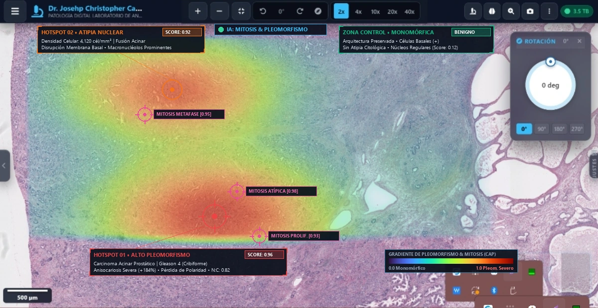
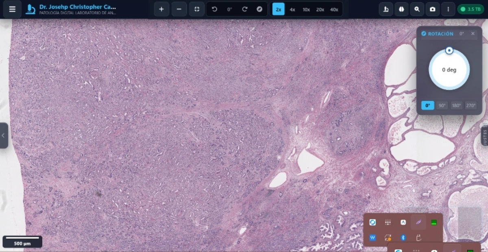

Certeza diagnóstica
cuando cada minuto cuenta
Evaluación histopatológica rigurosa de biopsias y piezas quirúrgicas dirigida personalmente por el Dr. Josehp Castillo Cuenca (CMP 56435) con protocolos estandarizados CAP y tecnología de morfometría computacional por IA.



Dr. Josehp Castillo Cuenca
Médico Especialista en Anatomía Patológica (CMP 56435)
Servicios y Tecnología Especializada
Selecciona el área de tu interés para conocer los detalles técnicos completos.
Inmunohistoquímica
Catálogo de anticuerpos: Ki-67, HER2, CK7/20, PD-L1 y vademécum de +60 marcadores.
Ver Biomarcadores →Patología Digital
Lámina histológica escaneada interactiva a 40x con paneo, zoom y medición micrométrica.
Explorar Lámina WSI →Visor Microscopio 360°
Rotación tridimensional interactiva de la estación óptica de patología con el dedo.
Ver Aquí en 360° ↑Área Académica
Atlas de dermatopatología, protocolos quirúrgicos CAP y seminarios para residentes.
Ver Recursos Docentes →